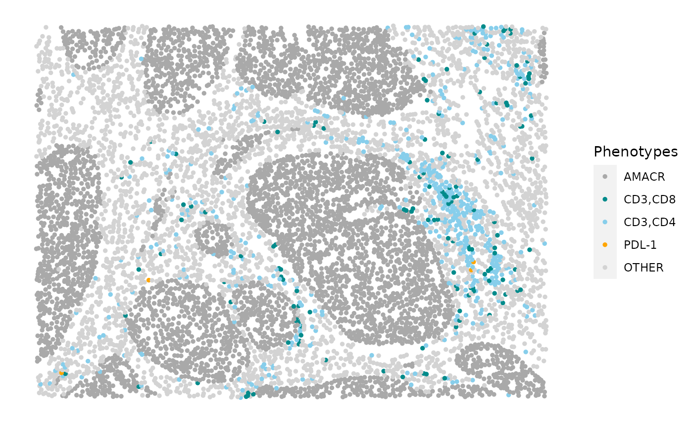
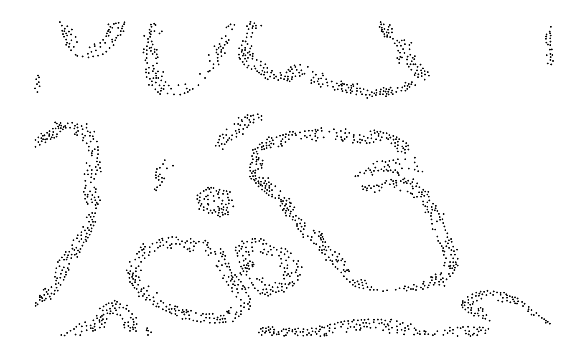
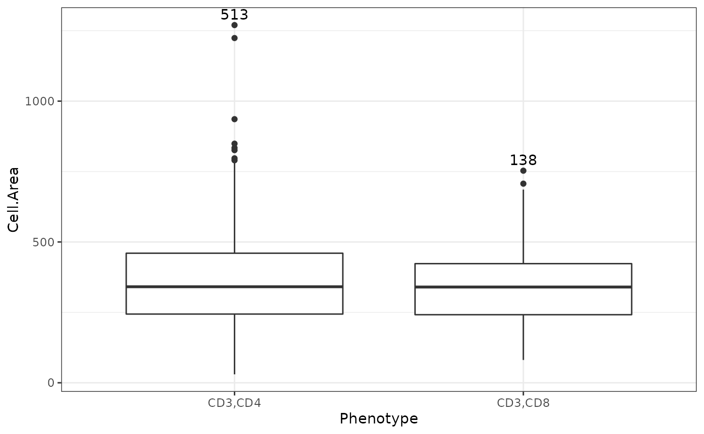

Overview of the SPIAT package
Anna Trigos, Tom Yang, Volkan Ozkoban
20 August 2020
Source:vignettes/introduction.Rmd
introduction.RmdIntroduction
SPIAT (Spatial Image Analysis of Tissues) is an R package with a suite of data processing, quality control, visualization, data handling and data analysis tools. SPIAT includes our novel algorithms for the identification of cell clusters, cell margins and cell gradients, the calculation of neighbourhood proportions, and algorithms for the prediction of cell phenotypes. SPIAT also includes speedy implementations of the calculation of cell distances and detection of cell communities. An overview of the functions available is shown in the figure below.
This version of SPIAT is directly compatible with Opal multiplex immunohistochemistry images analysed through the HALO and InForm analysis software, but its intuitive implementation allows use with a diversity of platforms.
The new Opal multiplex immunohistochemistry staining protocol allows the use of 6-8 markers simultaneously on a single slide followed by imaging on the Perkin Elmer Vectra quantitative imaging system. It has gained significant popularity due to its applicability to formalin fixed paraffin embedded tissue sections, allowing the examination of samples taken in a clinical setting. The imaging system records the fluorescence emission for each marker, and each cell is assigned an X,Y coordinate of its location in the tissue, effectively providing single-cell resolution. The fluorescence emission maps of individual markers are then combined to yield the location and phenotype of cells, along with marker intensity.

Setting up the data
First we load the SPIAT library.
# load library library(SPIAT)
For this tutorial we will use data that’s already formatted for SPIAT. formatted_image This is SingleCellExperiment format where the count assay stores the expression level of every marker (rows) for every cell (columns), and cell phenotype, x and y coordinates, other properties (Cell Size, Nucleus Size, Nucleus Compactness, Nucleus Axis Ratio, Cell Axis Ratio ) are stored under colData.
data("formatted_image")
The steps to format data for SPIAT are shown in the code below. It requires 3 things:
- path to the raw InForm or HALO data file
- names of the markers used in the OPAL staining
- names of the intensity columns of interest
We would use format_image_to_sce to format the data for SPIAT as shown in the commented out code below. format_image_to_sce creates a SingleCellExperiment object.
# raw_inform_data <- "S6_[49209,17530]_cell_seg_data.txt"
# markers <- c("DAPI","CD3","PDL1","CD4","CD8","AMACR")
# intensity_columns_interest <- c(
"Nucleus DAPI (DAPI) Mean (Normalized Counts, Total Weighting)",
"Cytoplasm CD3 (Opal 520) Mean (Normalized Counts, Total Weighting)",
"Membrane PDL-1 (Opal 540) Mean (Normalized Counts, Total Weighting)",
"Cytoplasm CD4 (Opal 620) Mean (Normalized Counts, Total Weighting)",
"Cytoplasm CD8 (Opal 650) Mean (Normalized Counts, Total Weighting)",
"Cytoplasm AMACR (Opal 690) Mean (Normalized Counts, Total Weighting)"
)
# formatted_image <- format_image_to_sce(
# format="INFORM",
# image=raw_inform_data,
# markers=markers,
# intensity_columns_interest=intensity_columns_interest,
# dye_columns_interest=NULL
)In the case of large images, or images where there are two independent tissue sections, it is recommended to split images into sections defined by the user. This can be performed with image_splitter. It can also plot the different combinations of markers within the image segments.
split_image <- image_splitter(formatted_image, number_of_splits=3, plot = FALSE)
We can check what phenotypes are present in the image data with print_phenotypes.
print_phenotypes(formatted_image)
## [1] "AMACR" "CD3,CD4" "CD3,CD8" "PDL1"These phenotypes are determined from individual markers like AMACR ro combinations of markers like CD3 and CD4. The above markers can be interpreted as follows:
AMACR = prostate cancer cells
CD3,CD4 = helper T cells
CD3,CD8 = cytotoxic T cells
PDL1 = immune checkpoint
So AMACR identifies which cells in the image are prostate cancer cells. CD3,CD4 and CD3,CD8 which types of T cells (immune cells) are present, and PDL1 is used to help determine if the cancer may benefit from immunotherapy treatment.
Quality control of images
Since cell phenotypes can be defined by combination of markers, low cell segmentation quality, antibody ‘bleeding’ from one cell to another or inadequate marker thresholding, can lead to the assignment of erroneous cell phenotypes. Cells might be identified as being positive for a biologically unfeasible combination of markers (for example, cells positive for a tumour cell marker such as AMACR and an immune cell marker, such as CD3). Therefore, SPIAT allows the user to manually input which phenotypes they would like to keep or exclude with select_phenotypes.
data_subset <- select_phenotypes(formatted_image, keep=TRUE, phenotypes = c("AMACR", "CD3,CD8", "PDL1")) print_phenotypes(data_subset)
## [1] "AMACR" "CD3,CD8" "PDL1"Alternatively, we also implemented a shuffling strategy to determine how likely it is to obtain a particular combination of markers by chance with marker_permutation. Here, we create a null distribution by permuting the marker labels of cells, and calculate the empirical p-value of whether an image is enriched or depleted in a particular combination of markers. This is meant to provide guidance to the users of which combination is likely to occur by chance (e.g. because there are high numbers of cells positive for particular marker), but it is not absolute, and users are highly encouraged to review the results.
sig <- marker_permutation(formatted_image, num_iter = 100)
We will work with all the original phenotypes present in formatted_image here.
Boxplots of positive vs negative cells
Cells positive for a marker should have higher levels of the marker. Since HALO and InForm use machine learning to determine positive cells, and not a strict threshold, some positive cells will have low marker intensity, and vice versa. However, an unclear separation of marker intensities between positive and negative cells would suggest incorrect phenotyping or unreliable phenotyping due to background noise. We can use marker_expression_boxplot to produce a boxplot for cells phenotyped as being positive or negative for a marker.
marker_expression_boxplot(formatted_image, "CD3")

Cell proportions/percentages
Calculate the number and proportion of each cell phenotype in image.
p_cells <- calculate_cell_proportions(sce_object = formatted_image) p_cells
## Cell_type Number_of_cells Proportion Percentage
## 1 AMACR 4446 0.87159381 87.159381
## 2 CD3,CD4 513 0.10056852 10.056852
## 3 CD3,CD8 138 0.02705352 2.705352
## 4 PDL1 4 0.00078416 0.078416Plot cells proportions as barplots
plot_cell_percentages(p_cells)

Visualizing tissues
Categorical dot plot
We can generate a dot plot that summarizes all markers and cell types with plot_cell_categories. Each dot corresponds to a cell and cells are coloured by phenotype. The user can choose the colours for the phenotypes. Any phenotypes present in the data but not in the phenotypes of interest will be put in the category “OTHER” and coloured lightgrey.
phenotypes_of_interest <- c("AMACR", "CD3,CD4", "CD3,CD8") colour_vector <- c("darkgrey", "red", "blue") plot_cell_categories(formatted_image, phenotypes_of_interest, colour_vector)

Scatter plots
The intensity of each marker can be visualized individually, which can be used to check for an uneven staining or high background intensity. plot_cell_marker_levels produces a scatter plot of the expression of every marker in each cell. Cells that were not phenotyped as being positive for the particular marker are excluded.
plot_cell_marker_levels(formatted_image, "CD3")

Heatmaps
For large images, there is also the option of ‘blurring’ the image, where the image is split into multiple small areas, and marker intensities are averaged within each. The image is blurred based on the num_splits parameter.
plot_marker_level_heatmap(formatted_image, num_splits = 100, "CD3")

3D surface plot
We can generate a 3D surface plot of the level of the selected marker with marker_surface_plot. The image is blurred based on the num_splits parameter.
marker_surface_plot(formatted_image, num_splits=15, marker="CD3")
3D stacked surface plot
To stack the surface plots of multiple markers in a single plot we have implemented marker_surface_plot_stack. This shows normalized expression level of specified markers and allows the identification of co-occurring and mutually exclusive markers.
marker_surface_plot_stack(formatted_image, num_splits=10, markers=c("CD3", "AMACR"))
Stacked surface plots of the AMACR (prostate cancer cell) and CD3 (T cell) markers in prostate tissue shows how AMACR and CD3 are mutually exclusive (valleys and mountains are opposite).
Identifying gradients of cells
One of the main questions in the spatial analysis of cells in tissues is whether a particular cell type is close to or interacting with another, and this is used as a benchmark to compare groups of images (e.g. primary vs. metastatic). For example, in the study of recognition of tumour cells by the immune system, a main question is whether cytotoxic T cells are close to tumour cells, or whether PDL1+ cells are aggregated in the tumour area.
A common solution is the calculation of the average minimum distance of tumour cells to immune cells, or vice versa. In this case, the minimum distance between an immune cell and a tumour cell is calculated, and then the process is repeated for all immune cells. This result is then averaged, or the distributions are compared between images using a Wilcoxon test or similar. A major drawback of this naïve approach is that the total number of cells is not considered – even with no preferential attraction of immune cells to tumour cells, a large number of cells will result in smaller minimum distances, resulting in false positive results. In summary, these naïve metrics do not take into account the actual spatial distribution of cells.
In SPIAT we address this challenge using the concept of gradients. If there is a true aggregation or attraction of cell phenotype A to cell phenotype B, then we would see higher levels of marker A closer to cells of phenotype B, with this value decreasing the further we move away from cells of phenotype B. This concept of gradients also allows the identification of repulsion between cell types, such that if we see that marker A intensities are lower when close to cells of phenotype B, but increase as we move away, then we can say that there is likely to be a process of repulsion. This concept is implemented in SPIAT in the plot_average_expression function, with the average_marker_expression_within_radius being the helper function for the calculation of the marker level within a specified radius.
plot_average_expression calculates the average intensity of the target_marker within a radius from the cells positive for the reference marker. Note that it pools all cells with the target marker that are within the specific radius of any reference cell. Results represent the average intensities within a radius, but do not correspond to metrics for each cell.
average_marker_expression_within_radius(formatted_image, reference_marker ="CD8", target_marker = "CD4", radius=30)
## [1] 10.13677plot_average_expression calculates the average expression of a target marker for a number of user-supplied radii values. It plots the expression level at each specified radius as a line graph.
plot_average_expression(formatted_image, reference_marker="CD8", target_marker="CD4", c(30, 35, 40, 45, 50, 75, 100))

This plot shows that high levels of CD8 were observed in cells near CD4+ cells and these levels decreased at larger radii. This suggests CD4+ and CD8+ cells may be closely interacting in this tissue.
Calculating distances between phenotypes
SPIAT implements a number of functions for the calculation of Euclidean distances between cells. First, we can compare the locations of two phenotypes (phenotype A and phenotype B) by identifying the closest cell of phenotype B to each of the cells of phenotype A with calculate_all_distances_between_phenotypes.
distances <- calculate_all_distances_between_phenotypes(formatted_image, remove_other = TRUE, cell_phenotypes_of_interest = c("CD3,CD4", "CD3,CD8"))
This creates a distribution of minimum distances between phenotypes A and B, which can be visualized as a violin plot with plot_cell_distances_violin. Visualization of this distribution often reveals whether pairs of cells are evenly spaced across the image, or whether there are clusters of pairs of phenotypes.
plot_cell_distances_violin(distances)


 From this plot we can see that CD3,CD4 cells seem to be more closely interacting with each other, as there are shorter distances between those cells, than between CD3,CD8 cells or between CD3,CD4 and CD3,CD8 cells.
From this plot we can see that CD3,CD4 cells seem to be more closely interacting with each other, as there are shorter distances between those cells, than between CD3,CD8 cells or between CD3,CD4 and CD3,CD8 cells.
We can also calculate summary statistics for the distances between each combination of phenotypes, the mean, median and standard deviation, with calculate_summary_distances_between_phenotypes.
summary_distances <- calculate_summary_distances_between_phenotypes(formatted_image)
## [1] "All markers are used in pair-wise distance calculation: "
## [1] "AMACR" "CD3,CD4" "CD3,CD8" "PDL1"These cell distances can then be visualized as a heatmap with plot_distance_heatmap.
plot_distance_heatmap(summary_distances)

This plot shows that AMACR cells are interacting most closely with CD3,CD4, followed by CD3,CD8, while PDL1 cells are more distant.
Measuring association to cell properties
We can use measure_association_to_cell_properties to compare two phenotypes for a property. Method options are density plot, boxplot, t test or wilcoxon test.
# boxplot measure_association_to_cell_properties(formatted_image, phenotypes = c("CD3,CD4", "CD3,CD8"), property = "Cell.Size", method = "box")

# t test measure_association_to_cell_properties(formatted_image, phenotypes = c("CD3,CD4", "CD3,CD8"), property = "Cell.Size", method = "t")
##
## Welch Two Sample t-test
##
## data: formatted_data[formatted_data$Phenotype == phenotypes[1], property] and formatted_data[formatted_data$Phenotype == phenotypes[2], property]
## t = 2.1766, df = 259.32, p-value = 0.03041
## alternative hypothesis: true difference in means is not equal to 0
## 95 percent confidence interval:
## 2.783879 55.630562
## sample estimates:
## mean of x mean of y
## 369.1637 339.9565Detecting cell clusters and communities
One of the main recurrent quest ions in the analysis of the spatial distribution of cells in the microenvironment is the presence or absence of aggregates of a particular phenotype or combination of phenotype. In SPIAT, we make the distinction of two types of cell aggregates. The first are “clusters”, which are cell aggregates composed of non-tumour cells, often by immune cells. For the detection of clusters, identify_cell_clusters only considers cell phenotypes of interest defined by the user (e.g. clusters of CD3,CD4 and CD3,CD8 cells). Euclidean distances between cells are calculated, and pairs of cells with a distance less than a threshold are considered to be ‘interacting’, with the rest being ‘non-interacting’. Hierarchical clustering is then used to separate the clusters.
We need to specify a radius. The radius corresponds to how lenient we are in defining clusters. A bigger radius would mean we are more likely to merge individual clusters. The radius is chosen based on what looks ‘reasonable’.
Cells not assigned to clusters (“free” cells) are assigned to Cluster_NA in the output table.
clusters <- identify_cell_clusters(formatted_image, phenotypes_of_interest = c("CD3,CD4", "CD3,CD8"), radius = 100)

This plot shows clusters of CD3+CD4+ and CD3+CD8+ cells. Each number and colour corresponds to a distinct cluster. Grey cells correspond to ‘free’, un-clustered cells.
While we recommend users to test out different thresholds and then visualise the clustering results, we also offer the average_minimum_distance function, which calculates the average minimum distance between all cells in an image to use as a reference or starting point.
average_minimum_distance(formatted_image)
## [1] 16.99093The second type of cell aggregates are “communities”, as previously defined (Jackson et al. 2020). Here, communities correspond to micro-niches or micro-ecosystems of cells that are geographically located close to each other. The main distinction between clusters and communities is that the algorithm for the detection of communities used by identify_cell_communities does not take into account cell phenotype. Therefore, communities often consist of a combination of different cell types, including tumour cells. dbscan is used as the clustering algorithm to detect communities (Hahsler, Piekenbrock, and Doran 2019). Cells without a phenotype are excluded.
communities <- identify_cell_communities(formatted_image, radius=100)

This plot shows communities of cells in the tissue. Each number and colour corresponds to a distinct community.
We can visualize the cell composition of clusters or communities. This allows discerning whether there are regions of heterotypic cell-cell interactions, or whether the image is highly structured with poor cell mixing.
To do this, we can use composition_of_clusters_and_communities to obtain the percentages of cells with a specific marker within each cluster and the number of cells in the cluster.
clusters_vis <- composition_of_clusters_and_communities(clusters, "Cluster") clusters_vis <- clusters_vis[clusters_vis$Total_number_of_cells >=5,]
The we can use plot_composition_heatmap to produce a heatmap showing the marker percentages within each cluster and the cluster sizes.
plot_composition_heatmap(clusters_vis, column_to_consider="Cluster")

This plot shows that most clusters are composed of a mixture of CD3+CD4+ and CD3+CD8+ cells and some are more dominated by CD3+CD4+ than others.
We can visualise the composition of the communities in a similiar way.
communities_vis <- composition_of_clusters_and_communities(communities, "Community") plot_composition_heatmap(communities_vis, column_to_consider="Community")

This plot shows that several communities detected have a combination of tumour (AMACR+) and immune cells while some are dominated by tumour or immune cells.
Calculating cell mixing
SPIAT includes calculation of cell mixing scores, which was originally defined as the number of immune-tumor interactions divided by the number of immune-immune interactions (Keren et al. 2018). We have generalized this score to allow calculation of any two cell phenotypes defined by the user. compute_mixing_score returns the mixing score between a reference marker and a target marker. The mixing score is defined by: the number of target-reference interactions/number of reference-reference interactions within a specified radius.
compute_mixing_score(formatted_image, reference_marker = "CD4", target_marker = "CD8")
## [1] "Number of reference cells: 513"
## [1] "Number of target cells: 138"
## [1] "Number of reference-target interactions: 67"
## [1] "Number of reference-reference interactions: 412"## [1] 0.1626214Identifying bordering cells
A common question that arises in the study of the tumour microenvironment is whether immune cells are close to the tumour margin, or how does the density of a particular cell type differ between the tumour and stromal areas. A first step in answering this question is the identification of cells that separate two distinct tissue areas (e.g. tumour area vs. stromal area). This tissue segmentation process often relies on machine learning or manual delineation of the borders in HALO or InForm, which are either coarse and/or time- consuming, rely on user intervention and often result in poor resolution. In SPIAT we developed an algorithm identify_bordering_cells to automatically detect bordering cells, with only 5 parameters: reference_marker (reference area to be identified, i.e. tumour marker), noise_radius, radius, lower_bound and upper_bound. The algorithm is as follows:
- We select reference_marker cells surrounded by other reference_marker cells: We first identify reference_marker cells with other reference_marker cells within noise_radius.
- We select non-reference cells surrounded by other non-reference cells: Only keep non-reference cells with non-reference cells within noise_radius.
- We identify bordering cells as those tumour cells surrounded by a certain percentage of stromal cells: We combine the cells identified in (1) and (2) and identify all neighbouring cells within radius. We then calculate the percentage of stromal cells in the neighbourhood of each tumour cell, and mark those tumour cells with a percentage of stromal cells within the lower_bound and upper_bound as bordering cells.
The identified bordering cells can then be used as a reference for calculation of distances to other cell types. Note that while here we use tumour cells as an example for reference cell, the same can be applied to any cell type.
identify_bordering_cells(formatted_image, reference_marker = "AMACR", rm_noise_radius = 50, radius = 100, lower_bound = 0.05, upper_bound=0.7)

Calculating neighbourhood proportions
SPIAT also offers an additional alternative to characterising cell aggregation, which is the calculation of the neighbourhood proportion with percentage_of_cells_within_radius. Here, we define the proportion of a target cell type within the neighbourhood of a reference cell type within a defined radius. This algorithm is inspired by previous work (8), but in that case the average proportion of all cells in an image was used. Here, we perform the calculation for each cell, and thus we take into account differences in spatial distribution. With our method, spatial structures can be identified by pinpointing cells with high neighbourhood proportions of the target cell type. Of note, percentage_of_cells_within_radius can be used for the detection of gradients instead of average_marker_expression_within_radius, however we recommend using the latter given its implementation allows a speedier analysis, and it does not depend on cell phenotyping as it uses marker intensities. The calculation is done per reference cell, so runtime will depend on the number of reference cells present.
percentage_of_cells_within_radius(formatted_image, reference_phenotypes = "PDL1", target_phenotypes = "AMACR", radius=100)
## Cell_664 Cell_2760 Cell_2992 Cell_3147
## 33.33333 94.73684 0.00000 0.00000Predicting phenotypes
One of the main applications of InForm and HALO is for cell phenotyping. Here, the user selects ~10 cells that are visually ‘positive’ for a particular marker, which are then used as a training set to phenotype the rest to the cells. However, this is usually an iterative process, whereby the user often needs to recalibrate the model by further selecting more cells and so forth. As a result, cell phenotyping is often time-consuming. In SPIAT we have implemented algorithms for the automatic phenotyping of cells based on marker intensities predict_phenotypes that do not require user intervention or the manual setting of thresholds.
Conceptually, our base algorithm assumes that most cells in an image are not positive for the particular marker of interest. With this assumption, we can estimate the background levels of the marker based on the distribution of marker intensities. We have observed that in most cases, marker levels follow a Beta (or Beta-like) distribution skewed to the left with a long right tail. With the assumption that most cells are negative for the marker, cells in this right tail are marked as being positive. The cutoff is selected as the inflection point of the distribution as it flattens. We have also accounted for cases where there is a weak antibody signal, and the distribution might resemble a normal distribution, or where there is a bimodal distribution, and only cells after the second peak should be considered.
predict_phenotypes produces a density plot showing actual and predicted cutoff of a positive reading for marker expression. It also prints to the console of the number of true positives (TP), true negatives (TN), false positives (FP) and false negatives (FN) under the prediction. It returns a dataframe containing the predicted expression status for a particular marker.
In cases where the cells to be phenotyped are likely to represent most of the cells in the image, for example tumour cells in a tumour-dense tissue, we have added an additional step to our base algorithm. Here, we first phenotype cells based on non-tumour markers (baseline_markers) (for example, immune markers). This population of cells is used to determine the distribution of background levels of the tumour marker. Subsequently, we select the 0.95 quantile of the tumour marker in this population as a putative threshold (threshold 1). We empirically determine the inflection point of the distribution of tumour markers using our base algorithm (threshold 2). Finally, we use whichever of the thresholds is greater as a cutoff for positive and negative cells.
predicted_image <- predict_phenotypes(formatted_image, plot_actual_cutoff = TRUE, plot_predicted_cutoff = TRUE, thresholds = NULL, tumour_marker = "AMACR", baseline_markers = c("CD3", "CD4", "CD8"))
## [1] "For CD3:"
## [1] "TP:644 TN:4352 FP:98 FN:6"
## [1] "For PDL1:"
## [1] "TP:2 TN:4884 FP:212 FN:2"
## [1] "For CD4:"
## [1] "TP:449 TN:4423 FP:165 FN:63"
## [1] "For CD8:"
## [1] "TP:138 TN:4705 FP:257 FN:0"
## [1] "For AMACR:"
## [1] "TP:4413 TN:637 FP:17 FN:33"
We can use marker_prediction_plot to plot the predicted cell phenotypes and the ones obtained using HALO or InForm, for comparison. Of note, this algorithm does not take into account cell shape or size, so if these are required for phenotyping, manual phenotyping with HALO or InForm is encouraged.
marker_prediction_plot(predicted_image, marker="CD3")

The plot shows CD3+ cells in the tissue. On the left are the CD3+ cells defined by InForm and on the right are the CD3+ cells predicted using SPIAT.
Reproducibility
## R version 4.0.2 Patched (2020-08-13 r79017)
## Platform: x86_64-pc-linux-gnu (64-bit)
## Running under: Ubuntu 20.04 LTS
##
## Matrix products: default
## BLAS/LAPACK: /usr/lib/x86_64-linux-gnu/openblas-openmp/libopenblasp-r0.3.8.so
##
## locale:
## [1] LC_CTYPE=en_US.UTF-8 LC_NUMERIC=C
## [3] LC_TIME=en_US.UTF-8 LC_COLLATE=en_US.UTF-8
## [5] LC_MONETARY=en_US.UTF-8 LC_MESSAGES=C
## [7] LC_PAPER=en_US.UTF-8 LC_NAME=C
## [9] LC_ADDRESS=C LC_TELEPHONE=C
## [11] LC_MEASUREMENT=en_US.UTF-8 LC_IDENTIFICATION=C
##
## attached base packages:
## [1] parallel stats4 stats graphics grDevices utils datasets
## [8] methods base
##
## other attached packages:
## [1] SPIAT_0.3 SingleCellExperiment_1.11.6
## [3] SummarizedExperiment_1.19.6 DelayedArray_0.15.7
## [5] matrixStats_0.56.0 Matrix_1.2-18
## [7] Biobase_2.49.0 GenomicRanges_1.41.6
## [9] GenomeInfoDb_1.25.10 IRanges_2.23.10
## [11] S4Vectors_0.27.12 BiocGenerics_0.35.4
## [13] BiocStyle_2.17.0
##
## loaded via a namespace (and not attached):
## [1] httr_1.4.2 tidyr_1.1.1 jsonlite_1.7.0
## [4] viridisLite_0.3.0 gtools_3.8.2 assertthat_0.2.1
## [7] BiocManager_1.30.10 GenomeInfoDbData_1.2.3 yaml_2.2.1
## [10] pillar_1.4.6 backports_1.1.8 lattice_0.20-41
## [13] glue_1.4.1 digest_0.6.25 RColorBrewer_1.1-2
## [16] XVector_0.29.3 colorspace_1.4-1 plyr_1.8.6
## [19] htmltools_0.5.0 pkgconfig_2.0.3 pheatmap_1.0.12
## [22] bookdown_0.20 zlibbioc_1.35.0 purrr_0.3.4
## [25] scales_1.1.1 RANN_2.6.1 pracma_2.2.9
## [28] tibble_3.0.3 farver_2.0.3 generics_0.0.2
## [31] dbscan_1.1-5 ggplot2_3.3.2 ellipsis_0.3.1
## [34] lazyeval_0.2.2 magrittr_1.5 crayon_1.3.4
## [37] memoise_1.1.0 evaluate_0.14 apcluster_1.4.8
## [40] fs_1.5.0 MASS_7.3-52 tools_4.0.2
## [43] data.table_1.13.0 lifecycle_0.2.0 stringr_1.4.0
## [46] plotly_4.9.2.1 munsell_0.5.0 compiler_4.0.2
## [49] pkgdown_1.5.1 rlang_0.4.7 grid_4.0.2
## [52] RCurl_1.98-1.2 htmlwidgets_1.5.1 crosstalk_1.1.0.1
## [55] labeling_0.3 bitops_1.0-6 rmarkdown_2.3
## [58] gtable_0.3.0 mmand_1.6.1 reshape2_1.4.4
## [61] R6_2.4.1 gridExtra_2.3 knitr_1.29
## [64] dplyr_1.0.2 rprojroot_1.3-2 desc_1.2.0
## [67] stringi_1.4.6 Rcpp_1.0.5 vctrs_0.3.2
## [70] tidyselect_1.1.0 xfun_0.16References
Hahsler, Michael, Matthew Piekenbrock, and Derek Doran. 2019. “Dbscan: Fast Density-Based Clustering with R.” Journal of Statistical Software 91 (1): 1–30.
Jackson, Hartland W, Jana R Fischer, Vito RT Zanotelli, H Raza Ali, Robert Mechera, Savas D Soysal, Holger Moch, et al. 2020. “The Single-Cell Pathology Landscape of Breast Cancer.” Nature 578 (7796): 615–20.
Keren, Leeat, Marc Bosse, Diana Marquez, Roshan Angoshtari, Samir Jain, Sushama Varma, Soo-Ryum Yang, et al. 2018. “A Structured Tumor-Immune Microenvironment in Triple Negative Breast Cancer Revealed by Multiplexed Ion Beam Imaging.” Cell 174 (6): 1373–87.